Journal
year.current = '2023'
quarter.current ='1'
#### LAUS for Philadelphia, Pennsylvania, and National ####
#Philadelphia LAUS
payload2 <- list('seriesid' = c('LAUCN421010000000003',
'LAUCN421010000000004',
'LAUCN421010000000005',
'LAUCN421010000000006'),
'startyear'='2010',
'endyear' = '2030',
'registrationKey'='3e5cdc72217947c09c3f6f8b939b1775')
LAUS2 <- blsAPI(payload2, api_version = 2, return_data_frame = T)
LAUS.phl <- LAUS2 %>%
pivot_wider(names_from = 'seriesID',
values_from = 'value') %>%
rename('unemp.rate' = 'LAUCN421010000000003',
'total.unemployed' = 'LAUCN421010000000004',
'total.employed' = 'LAUCN421010000000005',
'labor.force' = 'LAUCN421010000000006') %>%
mutate(area = "Philadelphia")
# LAUS for Pennsylvania
payload2 <- list('seriesid' = c('LAUST420000000000003',
'LAUST420000000000004',
'LAUST420000000000005',
'LAUST420000000000006'),
'startyear'='2010',
'endyear' = '2030',
'registrationKey'='3e5cdc72217947c09c3f6f8b939b1775')
LAUS2 <- blsAPI(payload2, api_version = 2, return_data_frame = T)
LAUS.pa <- LAUS2 %>%
pivot_wider(names_from = 'seriesID',
values_from = 'value') %>%
rename('unemp.rate' = 'LAUST420000000000003',
'total.unemployed' = 'LAUST420000000000004',
'total.employed' = 'LAUST420000000000005',
'labor.force' = 'LAUST420000000000006') %>%
mutate(area = "Pennsylvania")
# National Employment
payload2 <- list('seriesid' = c('LNU01000000',
'LNU02000000',
'LNU03000000',
'LNU04000000'),
'startyear'='2010',
'endyear' = '2030',
'registrationKey'='3e5cdc72217947c09c3f6f8b939b1775')
LAUS2 <- blsAPI(payload2, api_version = 2, return_data_frame = T)
LAUS.us <- LAUS2 %>%
pivot_wider(names_from = 'seriesID',
values_from = 'value') %>%
rename('unemp.rate' = 'LNU04000000',
'labor.force' = 'LNU01000000',
'total.employed' = 'LNU02000000',
'total.unemployed' = 'LNU03000000') %>%
mutate(area = "United States",
labor.force = as.numeric(labor.force)*1000,
total.employed = as.numeric(total.employed)*1000,
total.unemployed = as.numeric(total.unemployed)*1000)
#Merging All Three Areas
LAUS <- rbind(LAUS.phl,LAUS.pa,LAUS.us) %>%
mutate(period = paste(periodName, year, sep=" ")) %>%
dplyr::select(!c(year, periodName))
#Converting to Long Format
LAUS_long <- LAUS %>%
pivot_longer(cols=unemp.rate:labor.force) %>%
mutate(date = parse_date_time(period, orders = "my")) %>%
mutate(value = as.numeric(value))
#### LAUS Employment and Labor Force Charts ####
setwd("A:\\LMI Reporting\\Quarterly LMI Report\\Data and Charts\\ggplot Outputs")
LAUS_long %>%
subset(name %in% c("total.employed", "total.unemployed")) %>%
subset(area == "Philadelphia") %>%
ggplot(aes(x = date, y= value,
fill = factor(name, levels=c("total.unemployed","total.employed")))) +
geom_area(color = "white") +
scale_y_continuous(labels=comma_format(accuracy=1), breaks=scales::pretty_breaks(n = 6))+
coord_cartesian(ylim=c(500000,NA), expand = F) +
scale_fill_manual(labels = c("Total Labor Force", "Total Employment"), values = c("#dbd7d1","#007abd")) +
theme_classic() +
scale_x_datetime(date_breaks = "1 year", date_labels = "%Y")+
labs(x=NULL,y="Philadelphia Residents")+
theme(legend.position="top", legend.title=element_blank(),
axis.text.x = element_text(angle = 45, vjust = .5, size=10, color="black"),
axis.title.y = element_text(face="bold", margin = margin(t = 0, r = 20, b = 0, l = 0), size = 10, color="black"),
axis.text.y = element_text(size=10, color="black"),
legend.text = element_text(size=9, color="black", face="bold"),
panel.grid = element_blank()) 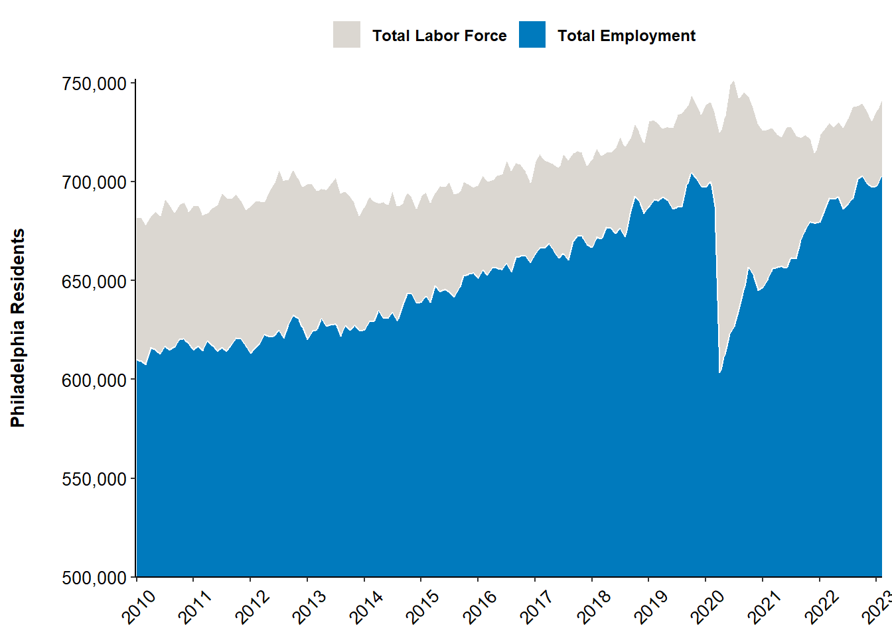
ggsave("Figure 1 Employment and Labor Force.png",
height=4, width = 7.5, units = "in")
# Relative Employment Change
LAUS %>%
mutate(date = parse_date_time(LAUS$period, orders = "my")) %>%
filter(date >= "2020-01-01") %>%
mutate(total.employed = as.numeric(total.employed)) %>%
arrange(date, date) %>%
group_by(area) %>%
mutate(change = (total.employed/first(total.employed) - 1)) %>%
ggplot(aes(x= date, y=change,
alpha = factor(area, levels = c("Philadelphia", "Pennsylvania", "United States")),
group = factor(area, levels = c("Philadelphia", "Pennsylvania", "United States")))) +
geom_line(aes(color=factor(area, levels = c("Philadelphia", "Pennsylvania", "United States"))),
size=2) +
scale_alpha_manual(values = c(1, .6,.5)) +
scale_y_continuous(labels=percent_format(accuracy=1), breaks = seq(-1, 1, by = .02),
sec.axis = dup_axis())+
scale_color_manual(values = c("#007abd","#005a8d","#47525f")) +
theme_minimal() +
scale_x_datetime(date_breaks = "1 year", date_labels = "%Y", expand = c(.05,0))+
labs(x=NULL,y="Percent Change in Employment")+
theme(legend.position="top", legend.title=element_blank(),
axis.text.x = element_text(size=11, color="black"),
axis.title.y = element_text(face="bold", size = 11, color="black"),
axis.text.y = element_text(size=11, color="black"),
legend.text = element_text(size=11, color="black", face="bold"),
panel.grid.major.x = element_blank(),
panel.grid.minor.x = element_blank(),
panel.grid.minor.y = element_blank()) +
geom_hline(aes(yintercept = 0))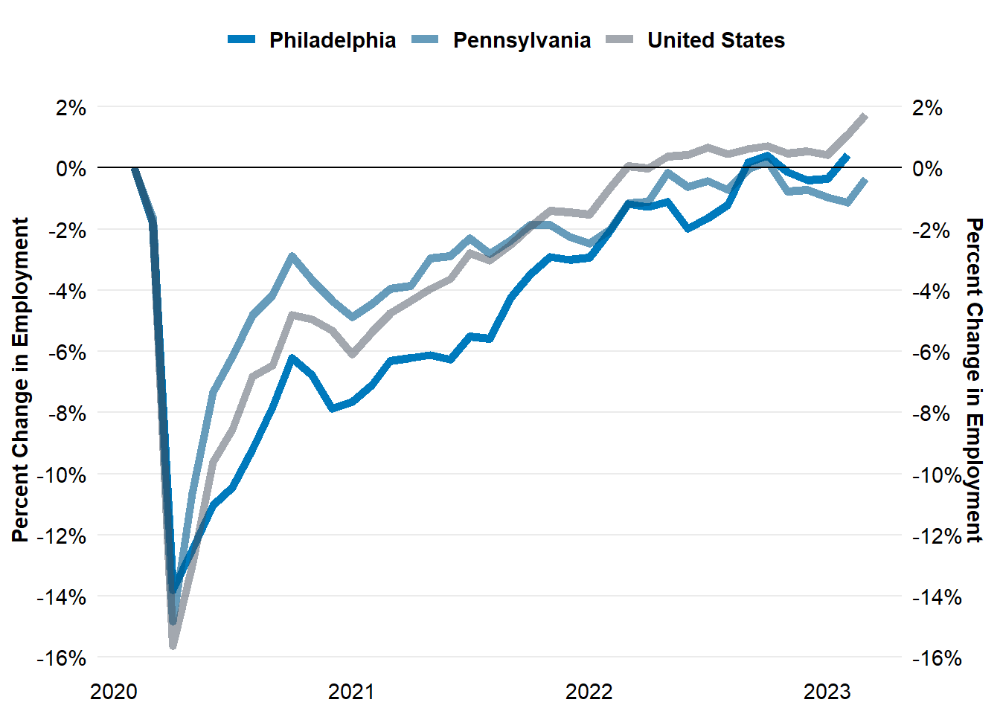
ggplot2::ggsave("Figure 3 Relative Employment.png",
height =4, width = 7.5, units = "in")
# Unemployment Rate
LAUS %>%
mutate(date = parse_date_time(LAUS$period, orders = "my")) %>%
filter(date >= "2019-01-01") %>%
mutate(unemp.rate = as.numeric(unemp.rate)) %>%
ggplot(aes(x=date, y=unemp.rate/100,
alpha = factor(area, levels = c("Philadelphia", "Pennsylvania", "United States")),
group = factor(area, levels = c("Philadelphia", "Pennsylvania", "United States")))) +
geom_line(aes(color=factor(area, levels = c("Philadelphia", "Pennsylvania", "United States"))),
size=2) +
scale_alpha_manual(values = c(1, .6,.5)) +
scale_y_continuous(labels=percent_format(accuracy=1), breaks = seq(-1, 1, by = .02),
sec.axis = dup_axis())+
scale_color_manual(values = c("#007abd","#172151","#47525f")) +
coord_cartesian(ylim=c(0,NA)) +
theme_minimal() +
scale_x_datetime(date_breaks = "1 year", date_labels = "%Y") +
labs(x=NULL,y="Unemployment Rate")+
theme(legend.position="top", legend.title=element_blank(),
axis.text.x = element_text(size=11, color="black"),
axis.title.y = element_text(face="bold", size = 11, color="black"),
axis.text.y = element_text(size=11, color="black"),
legend.text = element_text(size=10, color="black", face="bold"),
panel.grid.major.x = element_blank(),
panel.grid.minor.x = element_blank(),
panel.grid.minor.y = element_blank()) +
geom_hline(yintercept = .06)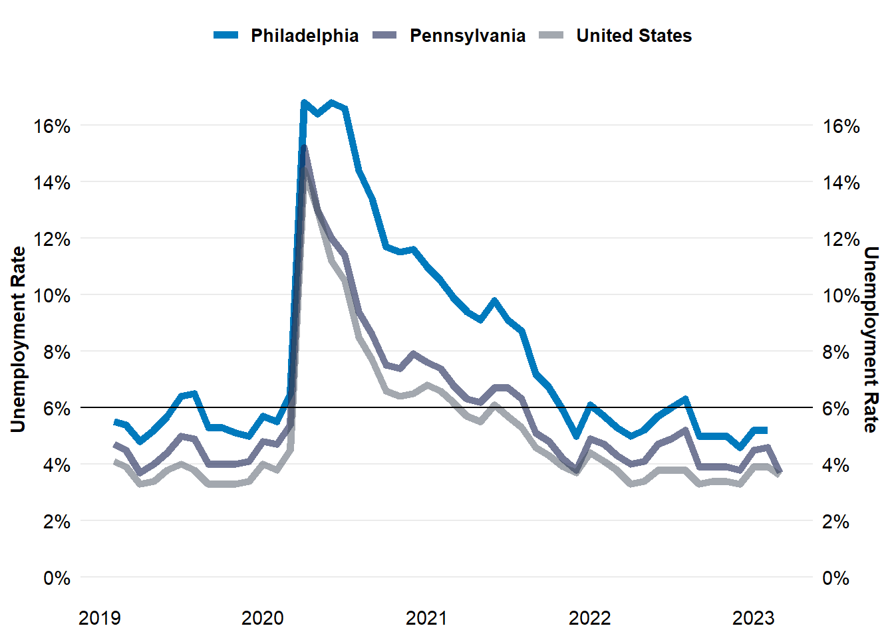
ggplot2::ggsave("Figure 2 Unemployment Rate.png",
height =5, width = 5, units = "in")
#Getting Call Out Figures
unemp.rate <- LAUS.phl %>%
head(n=1) %>%
dplyr::select(1:4)
feb2020.emp <- LAUS.phl %>%
mutate(period = paste(periodName, year, sep=" ")) %>%
dplyr::select(period, total.employed) %>%
subset(period == "February 2020")
feb2020.lf <- LAUS.phl %>%
mutate(period = paste(periodName, year, sep=" ")) %>%
dplyr::select(period, labor.force) %>%
subset(period == "February 2020")
emp.change <- LAUS.phl %>%
mutate(period = paste(periodName, year, sep=" ")) %>%
dplyr::select(period, total.employed) %>%
head(n=1) %>%
mutate(period = "Most Recent Month") %>%
rbind(feb2020.emp) %>%
pivot_wider(names_from = period, values_from = total.employed) %>%
mutate(`Change since Feb 2020` = as.numeric(`Most Recent Month`) - as.numeric(`February 2020`)) %>%
dplyr::select(`Change since Feb 2020`)
lf.change <- LAUS.phl %>%
mutate(period = paste(periodName, year, sep=" ")) %>%
dplyr::select(period, labor.force) %>%
head(n=1) %>%
mutate(period = "Most Recent Month") %>%
rbind(feb2020.lf) %>%
pivot_wider(names_from = period, values_from = labor.force) %>%
mutate(`Change since Feb 2020` = as.numeric(`Most Recent Month`) - as.numeric(`February 2020`)) %>%
dplyr::select(`Change since Feb 2020`)
#### LAUS for Comp Set ####
payload <- list('seriesid' = c('LAUMT423798000000005',
'LAUMT363562000000005',
'LAUMT114790000000005',
'LAUMT171698000000005',
'LAUMT241258000000005',
'LAUMT257165000000005',
'LAUMT063108000000005',
'LAUMT482642000000005',
'LAUMT131206000000005'),
'startyear'='2020',
'endyear' = '2030',
'registrationKey'='3e5cdc72217947c09c3f6f8b939b1775')
LAUS.comp <- blsAPI(payload, api_version = 2, return_data_frame = T) %>%
mutate(Month = my(paste(periodName, year, sep = " "))) %>%
mutate(City = case_when( seriesID == 'LAUMT423798000000005' ~ "Philadelphia" ,
seriesID == 'LAUMT363562000000005' ~ "New York City",
seriesID == 'LAUMT114790000000005' ~ "Washington, DC",
seriesID == 'LAUMT171698000000005' ~ "Chicago",
seriesID == 'LAUMT241258000000005' ~ "Baltimore",
seriesID == 'LAUMT257165000000005' ~ "Boston",
seriesID == 'LAUMT063108000000005' ~ "Los Angeles",
seriesID == 'LAUMT482642000000005' ~ "Houston",
seriesID == 'LAUMT131206000000005' ~ "Atlanta"))
LAUS.comp.12 <- LAUS.comp %>%
dplyr::group_by(City) %>%
slice_max(Month, n=12) %>%
dplyr::select(City, Month, value) %>%
mutate(value = as.numeric(value)) %>%
pivot_wider(names_from = Month, values_from = value) %>%
dplyr::ungroup() %>%
mutate(`Year-Over-Year Change` = (.[[2]] - .[[13]])/.[[13]]) %>%
dplyr::select(City, `Year-Over-Year Change`)
LAUS.comp.recent <- LAUS.comp %>%
dplyr::group_by(City) %>%
slice_max(Month, n=1) %>%
dplyr::select(City, Month, value) %>%
mutate(recent.emp = as.numeric(value))
LAUS.comp.recovery <- LAUS.comp %>%
mutate(value = as.numeric(value)) %>%
dplyr::filter(Month == "2020-02-01") %>%
mutate(Employment.Feb2020 = value) %>%
dplyr::select(City, Employment.Feb2020) %>%
left_join(LAUS.comp.recent) %>%
mutate(`Change Since February 2020` = (recent.emp - Employment.Feb2020)/Employment.Feb2020) %>%
dplyr::select(City, Month, `Change Since February 2020`) %>%
left_join(LAUS.comp.12)
rm(LAUS.comp, LAUS.comp.12, LAUS.comp.recent, payload)
LAUS.comp.recovery %>%
mutate(highlight = ifelse(City == "Philadelphia", "yes", "no")) %>%
ggplot(aes(y=reorder(City, `Change Since February 2020`), x= `Change Since February 2020`,
fill = highlight, label =`Change Since February 2020`))+
geom_col() +
scale_fill_manual(values = c("yes" = "#007abd", "no" = "#dbd7d1")) +
theme_minimal() +
scale_x_continuous(labels=percent_format(accuracy=1), breaks = seq(-1, 1, by = .01)) +
labs(x="Percent Change in Employment", y="Metropolitan Statisitical Area")+
theme(legend.position="none", legend.title=element_blank(),
axis.text.x = element_text(vjust = .5, size=10, color="black"),
axis.title.y = element_text(margin = margin(t = 0, r = 20, b = 0, l = 0), size = 10, color="black", face ="bold"),
axis.title.x = element_text(margin = margin(t = 20, r = 0, b = 0, l = 0), size = 10, color="black", face ="bold"),
axis.text.y = element_text(vjust = .5, size=10, color="black", face = "bold"),
legend.text = element_text(size=10, color="black"),
panel.grid.major.y = element_blank(),
panel.grid.minor.x = element_blank(),
panel.grid.minor.y = element_blank()) +
geom_vline(aes(xintercept = 0))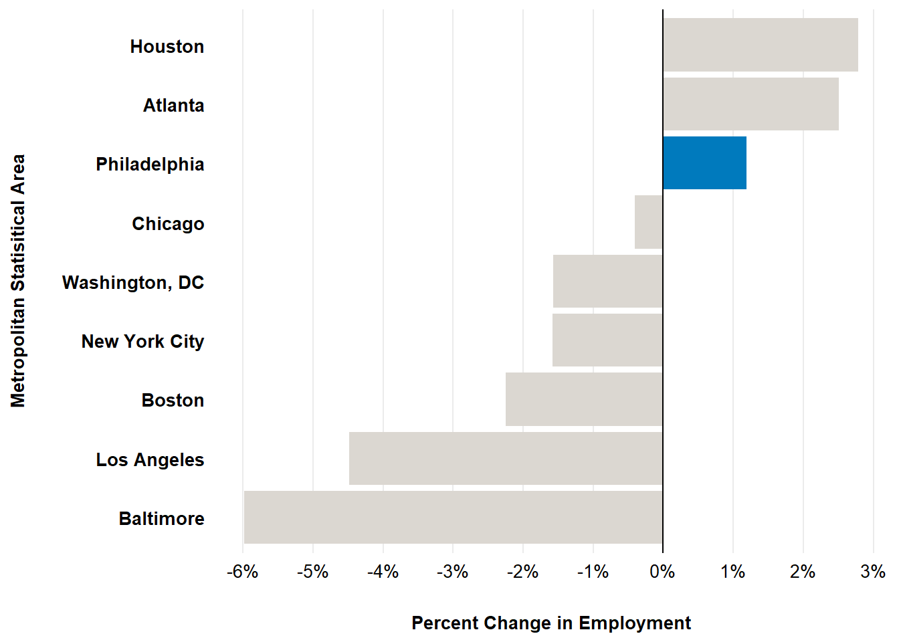
ggsave("Figure 4 Comp Set Recovery Change.png",
height=5, width = 5, units = "in")
LAUS.comp.recovery %>%
mutate(highlight = ifelse(City == "Philadelphia", "yes", "no")) %>%
ggplot(aes(y=reorder(City, `Year-Over-Year Change`), x= `Year-Over-Year Change`, fill = highlight))+
geom_col() +
scale_fill_manual(values = c("yes" = "#007abd", "no" = "#dbd7d1")) +
theme_minimal() +
scale_x_continuous(labels=percent_format(accuracy=1), breaks = seq(-1, 1, by = .01)) +
labs(x="Percent Change in Employment", y="Metropolitan Statisitical Area")+
theme(legend.position="none", legend.title=element_blank(),
axis.text.x = element_text(vjust = .5, size=10, color="black"),
axis.title.y = element_text(margin = margin(t = 0, r = 20, b = 0, l = 0), size = 10, color="black", face ="bold"),
axis.title.x = element_text(margin = margin(t = 20, r = 0, b = 0, l = 0), size = 10, color="black", face ="bold"),
axis.text.y = element_text(vjust = .5, size=10, color="black", face = "bold"),
panel.grid.major.y = element_blank(),
panel.grid.minor.x = element_blank(),
panel.grid.minor.y = element_blank()) +
geom_vline(aes(xintercept = 0))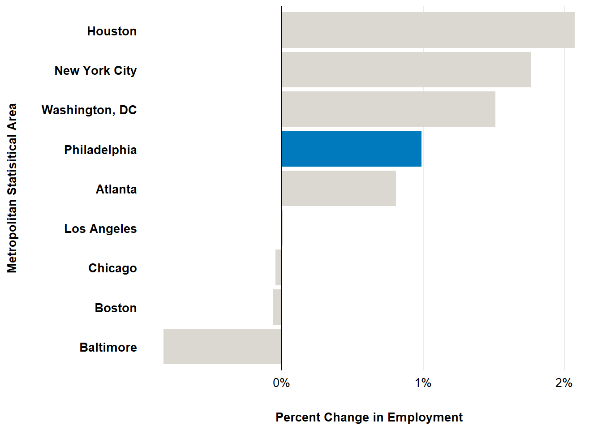
ggsave("Figure 5 Comp Set Year-Over-Year Change.png",
height=5, width = 5, units = "in")
#### Industry Employment for MSA ####
payload <- list(
'seriesid'=c('SMU42379800000000001', #Nonfarm Employment
'SMU42379801500000001', #Mining, Logging, and Construction
'SMU42379803000000001', #Manufacturing
'SMU42379804100000001', #Wholesale Trade
'SMU42379804200000001', #Retail Trade
'SMU42379804300000001', #Transportation and Utilities
'SMU42379805000000001', #Information
'SMU42379805552000001', #Finance and Insurance
'SMU42379806000000001', #Professional and Businees Services
'SMU42379806500000001', #Education and Health Services
'SMU42379807000000001' #Leisure and Hospitality
),
'startyear'=2015,
'endyear'=2030,
'registrationKey' = '160c8d9a0e7c40bcada565263a877b85')
ces.employment <- blsAPI(payload, api_version = 2, return_data_frame = T) %>%
mutate(Industry = case_when(seriesID == 'SMU42379800000000001' ~ "Nonfarm Employment",
seriesID == 'SMU42379801500000001' ~ "Mining, Logging, and Construction",
seriesID == 'SMU42379803000000001' ~ "Manufacturing",
seriesID == 'SMU42379804100000001' ~ "Wholesale Trade",
seriesID == 'SMU42379804200000001' ~ "Retail Trade",
seriesID == 'SMU42379804300000001' ~ "Transportation and Utilities",
seriesID == 'SMU42379805000000001' ~ "Information",
seriesID == 'SMU42379805552000001' ~ "Finance and Insurance",
seriesID == 'SMU42379806000000001' ~ "Professional and Business Services",
seriesID == 'SMU42379806500000001' ~ "Education and Health Services",
seriesID == 'SMU42379807000000001' ~ "Leisure and Hospitality"),
Employment = as.numeric(value) * 1000) %>%
mutate(Month = my(paste(periodName, year, sep = " ")))
most.recent.employment <- ces.employment %>%
dplyr::group_by(Industry) %>%
slice_max(Month) %>%
dplyr::select(Industry, Month, Employment)
month.change <- ces.employment %>%
dplyr::group_by(Industry) %>%
slice_max(Month, n=2) %>%
dplyr::select(Industry, Month, Employment) %>%
pivot_wider(names_from = Month, values_from = Employment) %>%
dplyr::ungroup() %>%
mutate(`Month-Over-Month Change` = .[[2]] - .[[3]]) %>%
dplyr::select(Industry, `Month-Over-Month Change`)
year.change <- ces.employment %>%
dplyr::group_by(Industry) %>%
slice_max(Month, n=12) %>%
dplyr::select(Industry, Month, Employment) %>%
pivot_wider(names_from = Month, values_from = Employment) %>%
dplyr::ungroup() %>%
mutate(`Year-Over-Year Change` = .[[2]] - .[[13]]) %>%
dplyr::select(Industry, `Year-Over-Year Change`)
pandemic.change <- ces.employment %>%
dplyr::group_by(Industry) %>%
dplyr::filter(Month == "2020-02-01") %>%
mutate(Employment.Feb2020 = Employment) %>%
dplyr::select(Industry, Employment.Feb2020) %>%
left_join(most.recent.employment) %>%
mutate(`Change Since February 2020` = Employment - Employment.Feb2020) %>%
dplyr::select(Industry, `Change Since February 2020`)
employment.summary <- most.recent.employment %>%
left_join(month.change) %>%
left_join(year.change) %>%
left_join(pandemic.change) %>%
distinct() %>%
dplyr::select(!(Month))
rm(most.recent.employment, month.change, year.change, pandemic.change, payload)
employment.summary %>%
filter(Industry != "Nonfarm Employment") %>%
arrange(desc(Employment)) %>%
ungroup() %>%
gt() %>%
cols_align(align = "center", columns = c(Employment, `Month-Over-Month Change`, `Year-Over-Year Change`,
`Change Since February 2020`))%>%
cols_align(align = "left", columns = Industry) %>%
fmt_number(sep_mark = ",", decimals = 0,
columns = c(Employment, `Month-Over-Month Change`, `Year-Over-Year Change`,
`Change Since February 2020`)) %>%
tab_style(
style = list(
cell_fill(color = "#007abd"),
cell_text(weight = "bold", color="white", font = "Helvetica")),
locations = list(cells_column_labels(columns = everything()))) %>%
tab_style(
style=cell_text(font = "Helvetica"),
locations = cells_body(columns = everything())) %>%
tab_options(table.width = 1100) %>%
cols_width(c(Industry) ~ px(370)) %>%
tab_options(data_row.padding = px(10),
column_labels.padding = px(15)) %>%
gtsave("Table 1 Regional Employment by Industry Sector.png", expand = 10, vheight=600, vwidth =1400)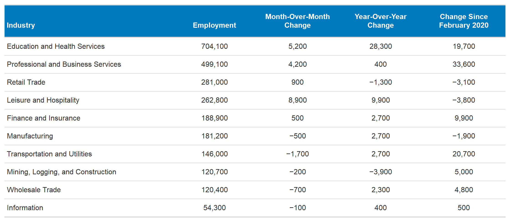
write_csv(employment.summary, "Industry Employment Summary.csv")
#### Industry Employment for City ####
payload <- list(
'seriesid'=c('SMU42979610000000001', #Nonfarm Employment
'SMU42979611500000001', #Mining, Logging, and Construction
'SMU42979613000000001', #Manufacturing
'SMU42979614100000001', #Wholesale Trade
'SMU42979614200000001', #Retail Trade
'SMU42979614300000001', #Transportation and Utilities
'SMU42979615000000001', #Information
'SMU42979615500000001', #Finance and Insurance
'SMU42979616000000001', #Professional and Businees Services
'SMU42979616500000001', #Education and Health Services
'SMU42979617000000001' #Leisure and Hospitality
),
'startyear'=2015,
'endyear'=2030,
'registrationKey' = '160c8d9a0e7c40bcada565263a877b85')
ces.employment <- blsAPI(payload, api_version = 2, return_data_frame = T) %>%
mutate(Industry = case_when(seriesID == 'SMU42979610000000001' ~ "Nonfarm Employment",
seriesID == 'SMU42979611500000001' ~ "Mining, Logging, and Construction",
seriesID == 'SMU42979613000000001' ~ "Manufacturing",
seriesID == 'SMU42979614100000001' ~ "Wholesale Trade",
seriesID == 'SMU42979614200000001' ~ "Retail Trade",
seriesID == 'SMU42979614300000001' ~ "Transportation and Utilities",
seriesID == 'SMU42979615000000001' ~ "Information",
seriesID == 'SMU42979615500000001' ~ "Finance and Insurance",
seriesID == 'SMU42979616000000001' ~ "Professional and Business Services",
seriesID == 'SMU42979616500000001' ~ "Education and Health Services",
seriesID == 'SMU42979617000000001' ~ "Leisure and Hospitality"),
Employment = as.numeric(value) * 1000) %>%
mutate(Month = my(paste(periodName, year, sep = " ")))
most.recent.employment <- ces.employment %>%
dplyr::group_by(Industry) %>%
slice_max(Month) %>%
dplyr::select(Industry, Month, Employment)
month.change <- ces.employment %>%
dplyr::group_by(Industry) %>%
slice_max(Month, n=2) %>%
dplyr::select(Industry, Month, Employment) %>%
pivot_wider(names_from = Month, values_from = Employment) %>%
dplyr::ungroup() %>%
mutate(`Month-Over-Month Change` = .[[2]] - .[[3]]) %>%
dplyr::select(Industry, `Month-Over-Month Change`)
year.change <- ces.employment %>%
dplyr::group_by(Industry) %>%
slice_max(Month, n=12) %>%
dplyr::select(Industry, Month, Employment) %>%
pivot_wider(names_from = Month, values_from = Employment) %>%
dplyr::ungroup() %>%
mutate(`Year-Over-Year Change` = .[[2]] - .[[13]]) %>%
dplyr::select(Industry, `Year-Over-Year Change`)
pandemic.change <- ces.employment %>%
dplyr::group_by(Industry) %>%
dplyr::filter(Month == "2020-02-01") %>%
mutate(Employment.Feb2020 = Employment) %>%
dplyr::select(Industry, Employment.Feb2020) %>%
left_join(most.recent.employment) %>%
mutate(`Change Since February 2020` = Employment - Employment.Feb2020) %>%
dplyr::select(Industry, `Change Since February 2020`)
employment.summary <- most.recent.employment %>%
left_join(month.change) %>%
left_join(year.change) %>%
left_join(pandemic.change) %>%
distinct() %>%
dplyr::select(!(Month))
rm(most.recent.employment, month.change, year.change, pandemic.change, payload)
employment.summary %>%
filter(Industry != "Nonfarm Employment") %>%
arrange(desc(Employment)) %>%
ungroup() %>%
gt() %>%
cols_align(align = "center", columns = c(Employment, `Month-Over-Month Change`, `Year-Over-Year Change`,
`Change Since February 2020`))%>%
cols_align(align = "left", columns = Industry) %>%
fmt_number(sep_mark = ",", decimals = 0,
columns = c(Employment, `Month-Over-Month Change`, `Year-Over-Year Change`,
`Change Since February 2020`)) %>%
tab_style(
style = list(
cell_fill(color = "#007abd"),
cell_text(weight = "bold", color="white", font = "Helvetica")),
locations = list(cells_column_labels(columns = everything()))) %>%
tab_style(
style=cell_text(font = "Helvetica"),
locations = cells_body(columns = everything())) %>%
tab_options(table.width = 1100) %>%
cols_width(c(Industry) ~ px(370)) %>%
tab_options(data_row.padding = px(10),
column_labels.padding = px(15)) %>%
gtsave("Table 1 City Employment by Industry Sector.png", expand = 10, vheight=600, vwidth =1400)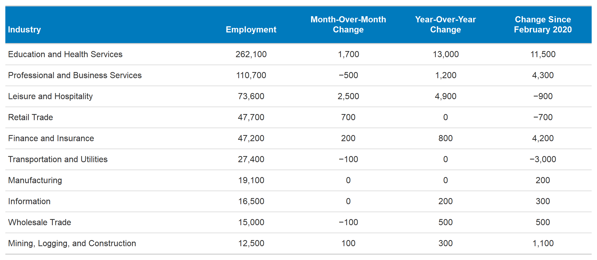
write_csv(employment.summary, "Industry Employment Summary.csv")
#### Wage Index ####
setwd("A:\\LMI Reporting\\Quarterly LMI Report\\Data and Charts\\ggplot Outputs")
payload <- list('seriesid' = c('CIU20200000000LJA',
'CIU2020000000000A'),
'startyear'='2019',
'endyear' = '2030',
'registrationKey'='3e5cdc72217947c09c3f6f8b939b1775')
wage.index.change <- blsAPI(payload, api_version = 2, return_data_frame = T) %>%
mutate(geography = ifelse(seriesID == 'CIU20200000000LJA', "Philadelphia", "United States"),
value = as.numeric(value) /100,
quarter = paste0(substr(period,1,1), substr(period,3,3)),
quarter1 = paste(year,substr(period,3,3), sep = "."),
quarter1 = as.numeric(quarter1),
year = as.numeric(year)) %>%
slice_max(order_by = quarter1, n = 16)
wage.index.change %>%
ggplot(aes(x = quarter, y = value, fill = geography)) +
geom_col(position = position_dodge(), color = "white") +
theme_minimal() +
scale_fill_manual(values = c("#007abd", "#002D46")) +
scale_y_continuous(labels=percent_format(), expand = c(0,0), sec.axis = dup_axis())+
labs(x=NULL,y="Year-Over-Year Change")+
theme(
axis.text.x = element_text(size=10, color="black"),
axis.title.y.left = element_text(face="bold", margin = margin(t = 0, r = 20, b = 0, l = 0), size = 11, color="black"),
axis.title.y.right = element_text(face="bold", margin = margin(t = 0, r = 0, b = 0, l = 20), size = 11, color="black"),
axis.text.y = element_text(size=11, color="black"),
legend.position = "top",
panel.grid = element_blank(),
strip.placement = "outside",
legend.title = element_blank(),
legend.text = element_text(size=10, color="black", face = "bold"),
strip.text.x = element_text(size=11, color="black", face = "bold")) +
geom_hline(yintercept = 0, color = "black", size = 1) +
facet_grid(~year,
scales = "free_x",
space = "free_x",
switch = "x") 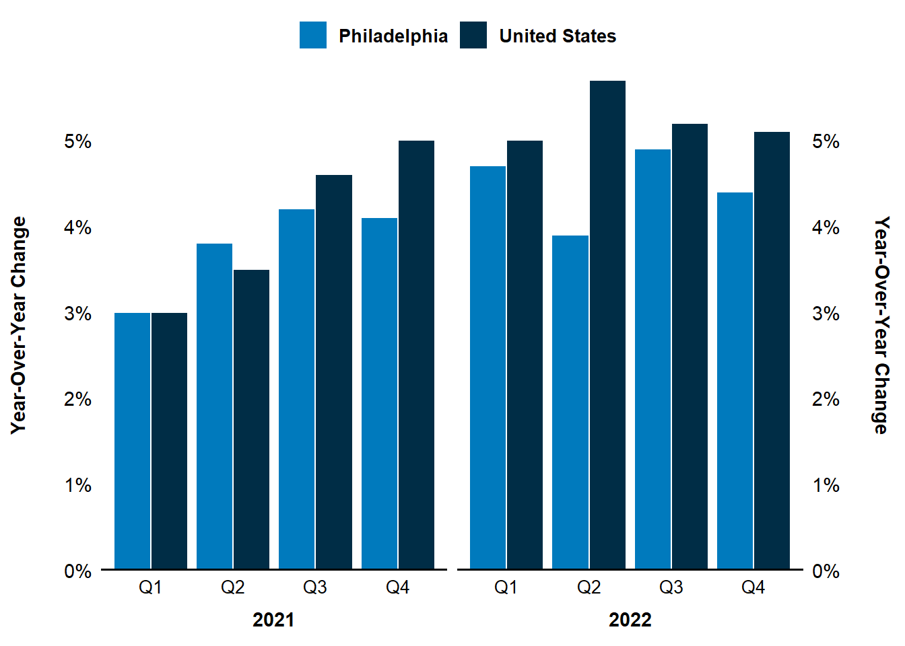
ggsave("Figure 14 Wage Index.png",
height=4.3, width = 5, units = "in")
#### Inflation CPI ####
setwd("A:\\LMI Reporting\\Quarterly LMI Report\\Data and Charts\\ggplot Outputs")
payload <- list('seriesid' = c('CUUR0000SA0',
'CUURS12BSA0'),
'startyear'='2015',
'endyear' = '2030',
'registrationKey'='3e5cdc72217947c09c3f6f8b939b1775')
cpi.inflation <- blsAPI(payload, api_version = 2, return_data_frame = T) %>%
mutate(geography = ifelse(seriesID == 'CUURS12BSA0', "Philadelphia", "United States")) %>%
dplyr::select(!(seriesID)) %>%
pivot_wider(names_from = geography, values_from = value) %>%
na.omit() %>%
mutate(period = paste(periodName, year, sep = " "),
period = as.Date(my(period))) %>%
pivot_longer(4:5, names_to = "geography", values_to = "value") %>%
mutate(value = as.numeric(value)) %>%
group_by(month=month(period, label = T), geography) %>%
arrange(period) %>%
mutate(yoy=value/lag(value,1)-1) %>%
group_by(geography) %>%
filter(period >= "2020-01-01")
cpi.inflation %>%
ggplot(aes(x = month, y = yoy, fill = geography)) +
geom_col(position = position_dodge(), color = "white") +
theme_minimal() +
scale_fill_manual(values = c("#007abd", "#002D46")) +
scale_y_continuous(labels=percent_format(), expand = c(0,0), sec.axis = dup_axis())+
labs(x=NULL,y="Year-Over-Year Change")+
theme(
axis.text.x = element_text(size=10, color="black"),
axis.title.y.left = element_text(face="bold", margin = margin(t = 0, r = 20, b = 0, l = 0), size = 11, color="black"),
axis.title.y.right = element_text(face="bold", margin = margin(t = 0, r = 0, b = 0, l = 20), size = 11, color="black"),
axis.text.y = element_text(size=11, color="black"),
legend.position = "top",
panel.grid = element_blank(),
strip.placement = "outside",
legend.title = element_blank(),
legend.text = element_text(size=10, color="black", face = "bold"),
strip.text.x = element_text(size=11, color="black", face = "bold")) +
geom_hline(yintercept = 0, color = "black", size = 1) +
facet_grid(~year,
scales = "free_x",
space = "free_x",
switch = "x") 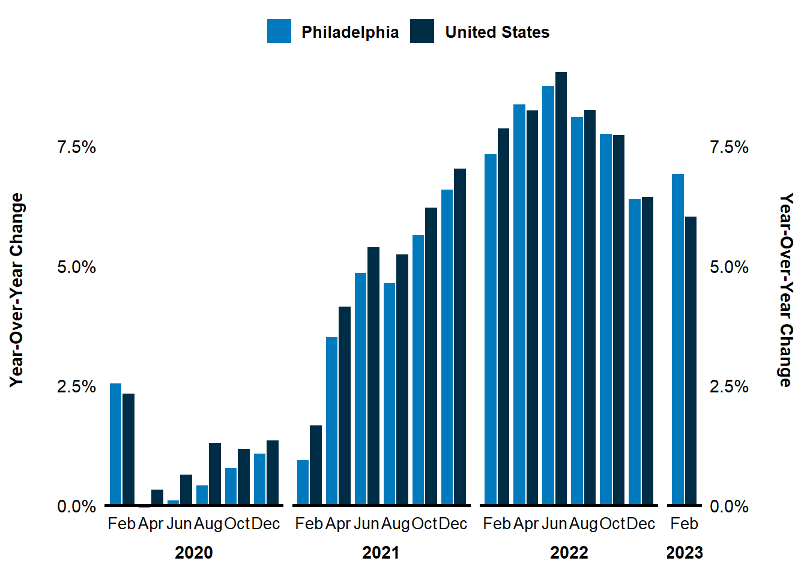
ggsave("Figure 15 Inflation.png",
height=4, width = 8, units = "in")
#### Removing Unnecessary Data ####
rm(ces.employment, employment.summary, feb2020.emp, feb2020.lf, LAUS, LAUS_long, LAUS.comp.recovery,
LAUS.pa, LAUS.phl, LAUS.us, LAUS2, payload, payload2, wage.index.change)
#### Pulling Data State CES Wages, YoY by industry####
payload <- list(
'seriesid'=c('SMU42000000500000003', #Private Employment
'SMU42000002000000003', #Mining, Logging, and Construction
'SMU42000003000000003', #Manufacturing
'SMU42000004000000003', #Trade and Transportation
'SMU42000005000000003', #Information
'SMU42000005500000003', #Finance and Insurance
'SMU42000006000000003', #Professional and Business Services
'SMU42000006500000003', #Education and Health Services
'SMU42000007000000003' #Leisure and Hospitality
),
'startyear'=2015,
'endyear'=2030,
'registrationKey' = '160c8d9a0e7c40bcada565263a877b85')
ces.wages <- blsAPI(payload, api_version = 2, return_data_frame = T) %>%
mutate(Industry = case_when(seriesID == 'SMU42000000500000003' ~ "Private Employment",
seriesID == 'SMU42000002000000003' ~ "Mining, Logging, and Construction",
seriesID == 'SMU42000003000000003' ~ "Manufacturing",
seriesID == 'SMU42000004000000003' ~ "Trade and Transportation",
seriesID == 'SMU42000005000000003' ~ "Information",
seriesID == 'SMU42000005500000003' ~ "Finance and Insurance",
seriesID == 'SMU42000006000000003' ~ "Professional and Business Services",
seriesID == 'SMU42000006500000003' ~ "Education and Health Services",
seriesID == 'SMU42000007000000003' ~ "Leisure and Hospitality")) %>%
mutate(Month = my(paste(periodName, year, sep = " "))) %>%
rename("Wage" = "value") %>%
filter(Month != "2023-01-01")
year.change.wages <- ces.wages %>%
mutate(Wage = as.numeric(Wage))%>%
dplyr::group_by(Industry) %>%
slice_max(Month, n=12) %>%
select(Industry, Month, Wage) %>%
pivot_wider(names_from = Month, values_from = Wage) %>%
dplyr::ungroup() %>%
mutate(`Year-Over-Year % Change` = (.[[2]] - .[[13]])/.[[13]],
`Year-Over-Year Change` = (.[[2]] - .[[13]])) %>%
select(Industry, `Year-Over-Year % Change`, `Year-Over-Year Change`, 2) %>%
mutate(`Most Recent Average` = .[[4]]) %>% select(!4)
last.month.wage.growth <- ces.wages %>%
filter(Month != "2022-12-01") %>%
mutate(Wage = as.numeric(Wage))%>%
dplyr::group_by(Industry) %>%
slice_max(Month, n=12) %>%
select(Industry, Month, Wage) %>%
pivot_wider(names_from = Month, values_from = Wage) %>%
dplyr::ungroup() %>%
mutate(`Nov Year-Over-Year % Change` = (.[[2]] - .[[13]])/.[[13]],
`Nov Year-Over-Year Change` = (.[[2]] - .[[13]])) %>%
select(Industry, `Nov Year-Over-Year % Change`, `Nov Year-Over-Year Change`, 2) %>%
mutate(`Most Recent Average` = .[[4]]) %>% select(!4)
wage.basispoint <- last.month.wage.growth %>%
left_join(year.change.wages, by = c("Industry")) %>%
mutate(growth.perc.change = 100 * (`Year-Over-Year % Change` - `Nov Year-Over-Year % Change`),
avg.change = (`Most Recent Average.y` - `Most Recent Average.x`))
setwd("A:\\LMI Reporting\\Quarterly LMI Report\\Data and Charts\\ggplot Outputs")
year.change.wages %>%
ggplot(aes(y=reorder(Industry, `Year-Over-Year % Change`), x= `Year-Over-Year % Change`))+
geom_col(fill = "#007abd") +
theme_minimal() +
scale_x_continuous(labels=percent_format(accuracy=1), breaks = seq(-1, 1, by = .01)) +
labs(x="Year-Over-Year % Change", y="Broad Industry Sector")+
theme(legend.position="none", legend.title=element_blank(),
axis.text.x = element_text(vjust = .5, size=10, color="black"),
axis.title.y = element_text(margin = margin(t = 0, r = 20, b = 0, l = 0), size = 10, color="black", face ="bold"),
axis.title.x = element_text(margin = margin(t = 20, r = 0, b = 0, l = 0), size = 10, color="black", face ="bold"),
axis.text.y = element_text(vjust = .5, size=10, color="black", face = "bold"),
legend.text = element_text(size=10, color="black"),
panel.grid.major.y = element_blank(),
panel.grid.minor.x = element_blank(),
panel.grid.minor.y = element_blank()) +
geom_vline(aes(xintercept = 0))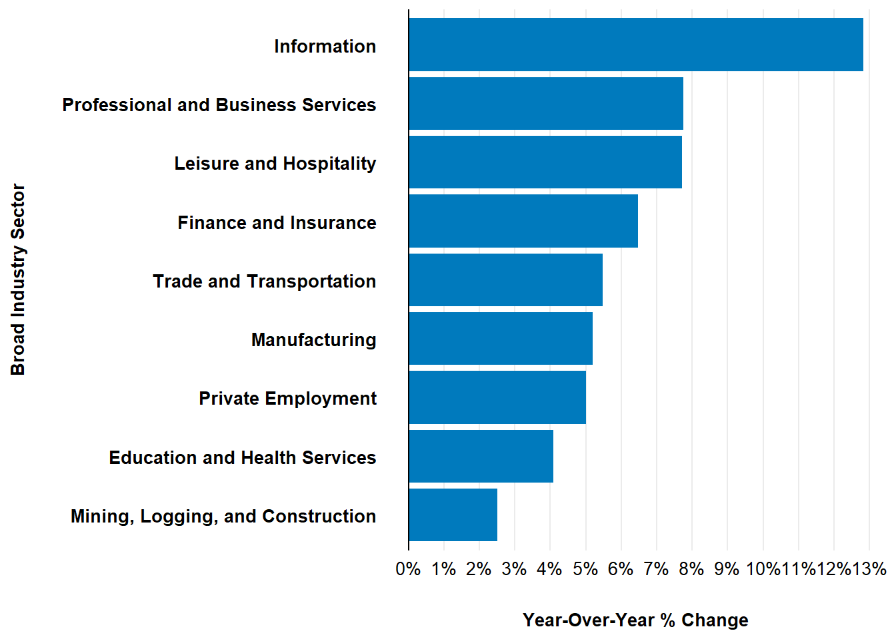
ggsave("Figure 16 Year Over Year Wage Changes in PA.png",
height=4.5, width = 9, units = "in")
write.csv(year.change.wages, "Year Change Wages Table.csv")
#### Burning Glass Charts ###
setwd("A:\\LMI Reporting\\Quarterly LMI Report\\Data and Charts\\ggplot Inputs")
bg.edu.exp <- readxl::read_excel("Burning Glass Extract.xlsx", sheet = 6) %>%
dplyr::select(!(7:8)) %>%
na.omit() %>%
pivot_longer(2:6) %>%
mutate(Education = name,
`Job Postings` = round(value,-1),
.keep = "unused")
bg.edu.exp$Experience <- dplyr::recode(bg.edu.exp$Experience,
`0 to 2 years of experience` = "Less than 3 Years",
`3 to 5 years of experience` = "3 Years or More",
`6 to 8 years of experience` = "3 Years or More",
`9+ years of experience` = "3 Years or More"
)
bg.edu.exp$Education <- dplyr::recode(bg.edu.exp$Education,
`Bachelor's degree` = "Bachelor's Degree",
`High school or vocational training` = "High School or Equivalent",
`Master's degree` = "Master's Degree or Higher",
`Associate's degree` = "Associate's Degree",
`Doctoral degree` = "Master's Degree or Higher"
)
bg.edu.exp <- bg.edu.exp %>%
dplyr::group_by(Experience, Education) %>%
dplyr::summarize(`Job Postings` = sum(`Job Postings`))
bg.ind <- readxl::read_excel("Burning Glass Extract.xlsx", sheet = 8) %>%
slice_max(`Job Postings`, n=10) %>%
dplyr::select(1:3) %>%
mutate(`Job Postings` = round(`Job Postings`,-1),
Industry = str_wrap(Industry, width = 50))
educ.req <- read_csv("A:\\LMI Reporting\\Quarterly LMI Report\\Data and Charts\\ggplot Inputs\\Educ_BLS.csv")
educ.req$Education <- factor(educ.req$Education, levels = c("No formal educational credential",
"High school diploma or equivalent",
"Postsecondary nondegree award",
"Associate's degree",
"Bachelor's degree",
"Master's degree",
"Doctoral or professional degree"))
bg.occ <- readxl::read_excel("Burning Glass Extract.xlsx", sheet = 10) %>%
slice_max(`Job Postings`, n=10) %>%
dplyr::select(1:3) %>%
mutate(`Job Postings` = round(`Job Postings`,-1),
Occupation = str_wrap(Occupation, width = 50)) %>%
stringdist_left_join(educ.req)
bg.occ.change.fast <- readxl::read_excel("Burning Glass Extract - Last Year.xlsx", sheet = 10) %>%
left_join(readxl::read_excel("Burning Glass Extract.xlsx", sheet = 10),
by = "Occupation") %>%
filter(`Job Postings.x` > 100) %>%
mutate(change = (`Job Postings.y` - `Job Postings.x`)/`Job Postings.y`) %>%
dplyr::select(Occupation, `Job Postings.x`, `Job Postings.y`, change) %>%
slice_max(order_by = change, n = 10)
bg.occ.change.dec.fast <- readxl::read_excel("Burning Glass Extract - Last Year.xlsx", sheet = 10) %>%
left_join(readxl::read_excel("Burning Glass Extract.xlsx", sheet = 10),
by = "Occupation") %>%
filter(`Job Postings.x` > 100) %>%
mutate(change = (`Job Postings.y` - `Job Postings.x`)/`Job Postings.y`) %>%
dplyr::select(Occupation,`Job Postings.x`,`Job Postings.y`, change) %>%
slice_max(order_by = -change, n = 10)
bg.occ.change.strong <- readxl::read_excel("Burning Glass Extract - Last Year.xlsx", sheet = 10) %>%
left_join(readxl::read_excel("Burning Glass Extract.xlsx", sheet = 10),
by = "Occupation") %>%
mutate(change = `Job Postings.y` - `Job Postings.x`) %>%
dplyr::select(Occupation, change) %>%
slice_max(order_by = change, n = 10)
bg.occ.change.weak <- readxl::read_excel("Burning Glass Extract - Last Year.xlsx", sheet = 10) %>%
left_join(readxl::read_excel("Burning Glass Extract.xlsx", sheet = 10),
by = "Occupation") %>%
mutate(change = `Job Postings.y` - `Job Postings.x`) %>%
dplyr::select(Occupation, change) %>%
slice_max(order_by = -change, n = 10)
bg.skill.level <- readxl::read_excel("Burning Glass Extract.xlsx", sheet = 10) %>%
dplyr::select(1:3) %>%
mutate(`Job Postings` = round(`Job Postings`,-1),
Occupation = str_wrap(Occupation, width = 50)) %>%
stringdist_left_join(educ.req) %>% select(3,6) %>%
dplyr::group_by(Skill) %>%
dplyr::summarize(total = sum(`Job Postings`))
bg.time <- readxl::read_excel("Burning Glass Extract.xlsx", sheet = 18) %>%
dplyr::select(1:2) %>%
mutate(`Job Postings` = round(`Total postings`,-1), .keep = "unused") %>%
mutate(Period = parse_date_time(Period, orders = "my"),
Year = year(Period),
Month = month(Period, abbr = T, label = T)) %>%
slice_max(Period, n = 18) %>%
mutate(recent = rank(Period) %in% 16:18)
bg.time2 <- readxl::read_excel("Burning Glass Extract.xlsx", sheet = 18) %>%
dplyr::select(1:2) %>%
mutate(`Job Postings` = round(`Total postings`,-1), .keep = "unused") %>%
mutate(Period = parse_date_time(Period, orders = "my")) %>%
slice_max(Period, n = 24) %>%
mutate(recent = rank(Period) %in% 19:21)
bg.employers <- readxl::read_excel("Burning Glass Extract.xlsx", sheet = 4) %>%
dplyr::select(1:2) %>%
slice_max(`Job Postings`, n = 20)
bg.certificate <- readxl::read_excel("Burning Glass Extract.xlsx", sheet = 2) %>%
dplyr::select(1:2) %>%
slice_max(`Job Postings`, n = 15)
bg.skills <- readxl::read_excel("Burning Glass Extract.xlsx", sheet = 12) %>%
dplyr::select(1:5)
bg.software <- readxl::read_excel("Burning Glass Extract.xlsx", sheet = 16) %>%
dplyr::select(1:5)
bg.skills <- bg.skills %>%
rbind(bg.software) %>% slice_max(`Skill Postings`, n = 7) %>%
dplyr::select(1)
bg.postings <- bg.time %>%
subset(recent == TRUE) %>%
mutate(`Total Postings this Quarter` = sum(`Job Postings`)) %>%
dplyr::select(`Total Postings this Quarter`) %>%
head(n=1)
bg.previous <- bg.time2 %>%
subset(recent == TRUE) %>%
mutate(`Total Postings last Quarter` = sum(`Job Postings`)) %>%
dplyr::select(`Total Postings last Quarter`) %>%
head(n=1) %>%
mutate(`Total Postings this Quarter` = bg.postings$`Total Postings this Quarter`) %>%
mutate(Change = `Total Postings this Quarter` - `Total Postings last Quarter`)
setwd("A:\\LMI Reporting\\Quarterly LMI Report\\Data and Charts\\ggplot Outputs")
write.csv(bg.occ.change.fast, "fastest_growing_occupations.csv")
write.csv(bg.occ.change.dec.fast, "fastest_shrinking_occupations.csv")
bg.time %>%
ggplot(aes(x = Month, y = `Job Postings`, fill = recent)) +
geom_col() +
theme_minimal() +
scale_fill_manual(values = c("#E7E6E6", "#007abd")) +
scale_y_continuous(labels=comma_format(accuracy=1), breaks=scales::pretty_breaks(n = 6))+
labs(x=NULL,y="Monthly Job Postings")+
theme(
axis.text.x = element_text(size=11, color="black", angle = 90, margin = margin(t=-5)),
strip.placement = "outside",
strip.text = element_text(face="bold", size = 11, color="black"),
axis.title.y = element_text(face="bold", margin = margin(t = 0, r = 20, b = 0, l = 0), size = 11, color="black"),
axis.text.y = element_text(size=11, color="black"),
legend.position = "none",
panel.grid = element_blank()) +
geom_hline(aes(yintercept = 0)) +
facet_grid(~Year,
scales = "free_x",
space = "free_x",
switch = "x") 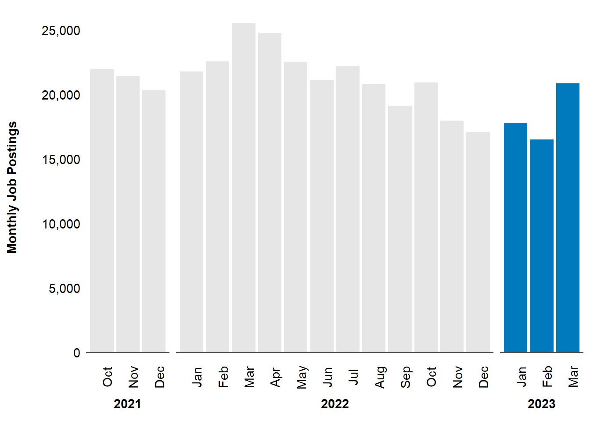
ggsave("Figure 12 BG Time.png",
height=4, width = 8, units = "in")
bg.occ %>%
rename("Occupation" = Occupation.x) %>%
ggplot(aes(x = `Job Postings`, y = reorder(Occupation, `Job Postings`),
fill = Education,
label = comma(`Job Postings`, accuracy = 1))) +
geom_bar(stat="identity", width=.8) +
scale_fill_manual(values = c("#a39d93", "#172151", "#005a8d", "#007abd")) +
scale_x_continuous(labels=comma_format(accuracy=1), breaks=scales::pretty_breaks(n = 6)) +
theme_minimal() +
labs(x=NULL,y=NULL)+
theme(legend.position=c(.75,.15), legend.title=element_text(size=12, color="black", face="bold", margin = margin(b=3)),
axis.text.x = element_blank(),
legend.title.align = .9,
legend.key.size = unit(.7,"cm"),
axis.text.y = element_text(size=10, color="black", margin = margin(r =-5)),
legend.text = element_text(size=10, color="black"),
panel.grid = element_blank()) +
geom_text(position = position_dodge(0.9),
hjust = 1.1, fontface="bold", color="white") +
guides(fill = guide_legend(title = "Typical Entry Level Education ",
label.position = "right")) +
geom_vline(aes(xintercept = 0))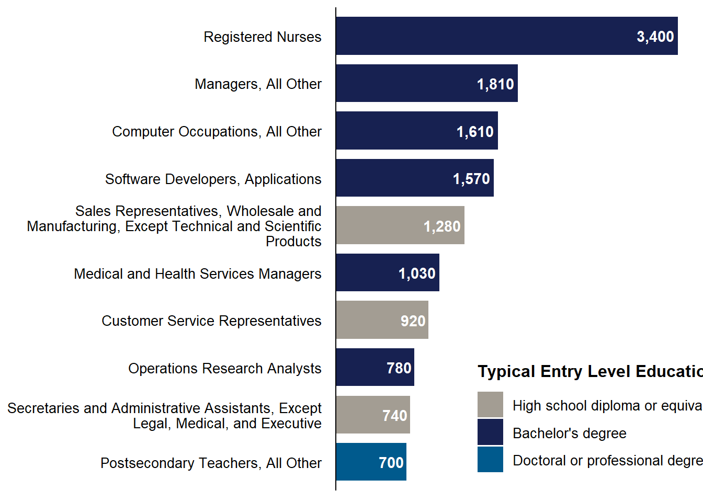
ggsave("Figure 13 BG Occupations.png",
height=4, width = 8, units = "in")
bg.ind %>%
ggplot(aes(x = `Job Postings`, y = reorder(Industry, `Job Postings`),
label = comma(`Job Postings`))) +
geom_col(fill = "#007abd") +
scale_x_continuous(labels=comma_format(accuracy=1), breaks=scales::pretty_breaks(n = 6))+
theme_minimal() +
labs(x=NULL,y=NULL)+
theme(legend.position="bottom", legend.title=element_blank(),
axis.text.x = element_blank(),
axis.title.x = element_text(face="bold", margin = margin(t = 20, r = 0, b = 0, l = 0), size = 11, color="black"),
axis.text.y = element_text(size=11, color="black", face = "bold", margin=margin(r=-10)),
legend.text = element_text(size=11, color="black", face="bold"),
panel.grid = element_blank()) +
geom_text(position = position_dodge(0.9),
hjust = 1.1, fontface="bold", color="white") +
guides(labels=guide_legend(reverse=T)) +
guides(fill = guide_legend(reverse = T)) +
geom_vline(aes(xintercept = 0))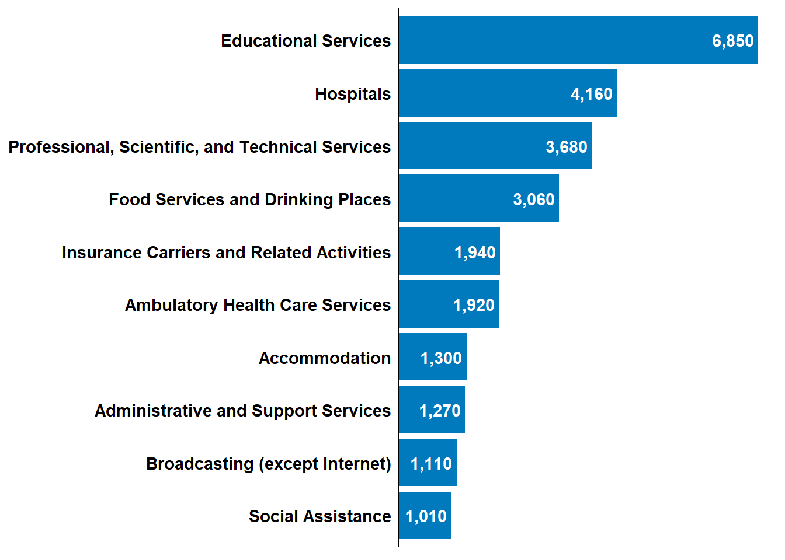
bg.edu.exp %>%
ggplot(aes(y=reorder(Education, -`Job Postings`), x= `Job Postings`, fill = Experience,
label = ifelse(`Job Postings`>=1500, comma(`Job Postings`), ""))) +
geom_col(color="white", width=.75) +
scale_x_continuous(labels=comma_format(accuracy=1), breaks=scales::pretty_breaks(n = 6))+
scale_fill_manual(values = c("#e5b11b", "#007abd")) +
theme_minimal() +
labs(x=NULL,y=NULL)+
theme(legend.position="bottom", legend.title=element_text(size=12, color="black", face="bold", margin = margin(b=3)),
axis.text.x = element_blank(),
axis.title.x = element_text(face="bold", margin = margin(t = 20, r = 0, b = 0, l = 0), size = 11, color="black"),
axis.text.y = element_text(size=11, color="black", face = "bold"),
legend.text = element_text(size=11, color="black", face="bold"),
panel.grid = element_blank()) +
geom_text(position = position_stack(vjust=.5), fontface="bold", color="white", size=5.5) +
guides(labels=guide_legend(reverse=T)) +
guides(fill = guide_legend(reverse = T)) +
geom_vline(aes(xintercept = 0)) +
guides(fill = guide_legend(title = "Required Experience: ")) 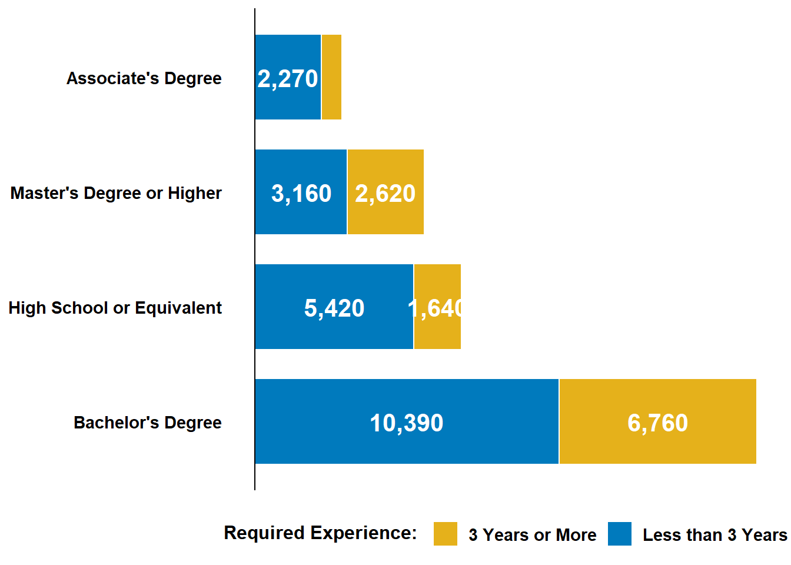
rm(bg.edu.exp,
bg.ind,
bg.occ,
bg.software,
bg.time,
bg.time2,
educ.req
)
#### Occupations ####
#install.packages("openxlsx")
library(openxlsx)
library(gt)
setwd("A:\\LMI Reporting\\Quarterly LMI Report\\Data and Charts\\ggplot Inputs")
occs <- openxlsx::read.xlsx ("EMSI Occupations.xlsx", sheet = 3, sep.names = " ") %>%
mutate(`Median Hourly Earnings` = as.numeric(`Median Hourly Earnings`)) %>%
na.omit(`Median Hourly Earnings`)
setwd("A:\\LMI Reporting\\Quarterly LMI Report\\Data and Charts\\ggplot Outputs")
occs %>%
mutate(Employment = round(as.numeric(.[[4]]), -2),
Annual.Emp.Change = round(as.numeric(.[[5]]), -1),
Occupation = Description,
Wage = paste0("$", format(round(`Median Hourly Earnings`,2),nsmall=2))) %>%
slice_max(Employment, n=25) %>%
dplyr::select(Occupation, Employment, Annual.Emp.Change, Wage) %>%
rename("Occupation" = Occupation,
"Total Employment" = Employment,
"Employment Change" = Annual.Emp.Change,
"Median Wage" = Wage) %>%
gt() %>%
fmt_number(columns = c(`Total Employment`), decimals = 0) %>%
cols_align(align = "center", columns = c(`Median Wage`,`Employment Change`, `Total Employment`)) %>%
tab_style(
style = list(
cell_fill(color = "#007abd"),
cell_text(weight = "bold", color="white", font = "Arial")
),
locations = cells_column_labels(columns = c(Occupation,
`Median Wage`,`Employment Change`, `Total Employment`)))%>%
tab_style(
style=cell_text(font = "Arial"),
locations = cells_body(columns = c(Occupation, `Median Wage`,`Employment Change`, `Total Employment`))) %>%
cols_width(c(`Occupation`) ~ px(450)) %>%
tab_options(
column_labels.padding = 10,
table.width = 1000
) %>%
gtsave("Appendix Table 5 Largest Occupations.png", expand = 10, vwidth=1200)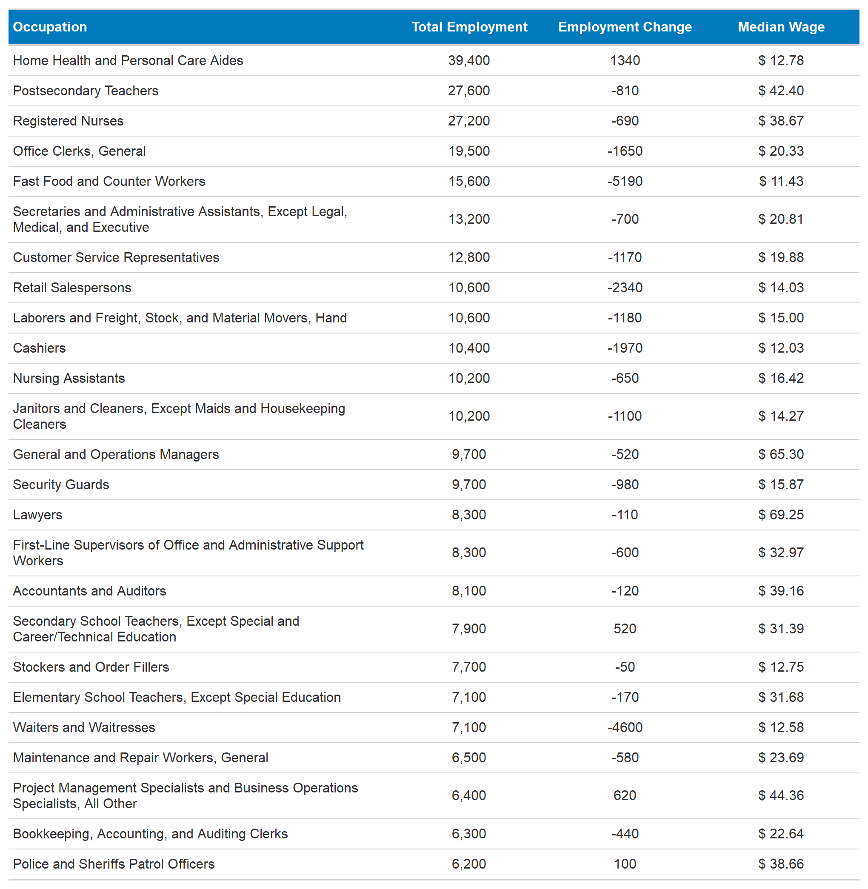
occs %>%
mutate(change = as.integer(.[[5]])) %>%
select(c(`Typical Entry Level Education`, change)) %>%
mutate(`Typical Entry Level Education` = factor(`Typical Entry Level Education`,
levels = c("No formal educational credential",
"High school diploma or equivalent",
"Postsecondary nondegree award",
"Associate's degree",
"Bachelor's degree",
"Master's degree",
"Doctoral or professional degree"))) %>%
na.omit() %>%
subset(`Typical Entry Level Education` != "N/A") %>%
dplyr::group_by(`Typical Entry Level Education`) %>%
dplyr::summarize(change = sum(change)) %>%
ggplot(aes(y=reorder(`Typical Entry Level Education`, -change), x= change))+
geom_col(color = "white", fill = "#005a8d") +
theme_minimal() +
scale_x_continuous(labels=comma_format(accuracy=1)) +
labs(x="Change in Employment",y="Typical Entry Level Education")+
theme(legend.position="bottom", legend.title=element_blank(),
axis.text.x = element_text(vjust = .5, size=10, color="black", face = "bold"),
axis.title.y = element_text(margin = margin(t = 0, r = 10, b = 0, l = 0), size = 10, color="black", face ="bold"),
axis.title.x = element_text(margin = margin(t = 10, r = 0, b = 0, l = 0), size = 10, color="black", face ="bold"),
axis.text.y = element_text(size=10, color="black", face = "bold"),
legend.text = element_text(size=10, color="black"),
panel.grid.major.y = element_blank(),
panel.grid.minor.x = element_blank(),
panel.grid.minor.y = element_blank()) +
geom_vline(aes(xintercept = 0))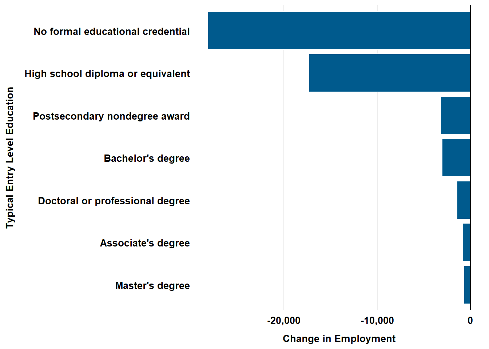
ggsave("Figure 11 Occupational Employment Change by Typical Degree Requirements in Philadelphia.png",
height=4, width = 5, units = "in")
educ.occs <- occs %>%
mutate(change = as.integer(.[[5]])) %>%
select(c(`Typical Entry Level Education`, change)) %>%
mutate(`Typical Entry Level Education` = factor(`Typical Entry Level Education`,
levels = c("No formal educational credential",
"High school diploma or equivalent",
"Postsecondary nondegree award",
"Associate's degree",
"Bachelor's degree",
"Master's degree",
"Doctoral or professional degree"))) %>%
na.omit() %>%
subset(`Typical Entry Level Education` != "N/A") %>%
dplyr::group_by(`Typical Entry Level Education`) %>%
dplyr::summarise(change=sum(change)) %>%
dplyr::mutate(share = change/sum(change))
occs %>%
mutate(change = as.integer(.[[5]]),
wage.groups = cut(as.numeric(`Median Hourly Earnings`), breaks = c(0,14,24,34,44,54,Inf),
labels = c("Less than $15", "$15 to $24", "$25 to $34", "$35 to $44", "$45 to $54", "$55 and Higher"))) %>%
select(c(`wage.groups`, change)) %>%
na.omit() %>%
dplyr::group_by(wage.groups) %>%
dplyr::summarize(change = sum(change)) %>%
ggplot(aes(y=wage.groups, x= change))+
geom_col(color = "white", fill = "#005a8d") +
coord_flip() +
theme_minimal() +
scale_x_continuous(labels=comma_format(accuracy=1)) +
labs(x="Change in Employment",y="Median Hourly Wage")+
theme(legend.position="bottom", legend.title=element_blank(),
axis.text.x = element_text(vjust = 1, hjust = 1, size=10, color="black", angle = 45, face = "bold"),
axis.title.y = element_text(margin = margin(t = 0, r = 10, b = 0, l = 0), size = 10, color="black", face ="bold"),
axis.title.x = element_text(margin = margin(t = 10, r = 0, b = 0, l = 0), size = 10, color="black", face ="bold"),
axis.text.y = element_text(size=10, color="black", face = "bold"),
legend.text = element_text(size=10, color="black"),
panel.grid.major.y = element_blank(),
panel.grid.minor.x = element_blank(),
panel.grid.minor.y = element_blank()) +
geom_vline(aes(xintercept = 0))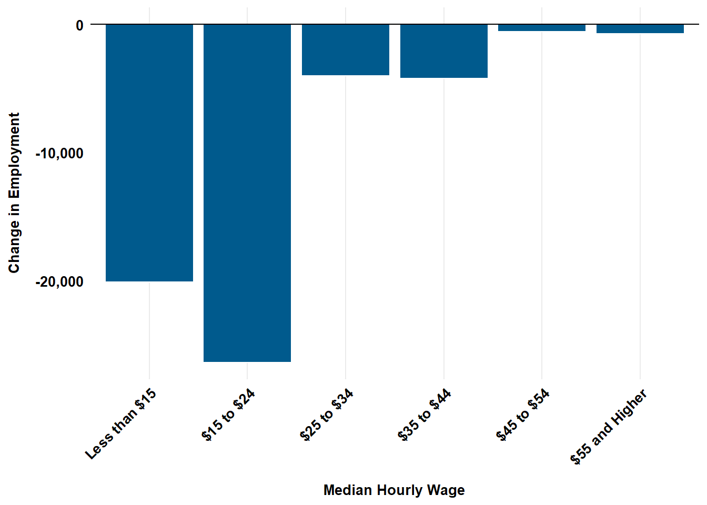
ggsave("Figure 10 Occupational Employment Change by Median Wage in Philadelphia.png",
height=4, width = 5, units = "in")
wage.occs <- occs %>%
mutate(change = as.integer(.[[5]]),
wage.groups = cut(as.numeric(`Median Hourly Earnings`), breaks = c(0,14,24,34,44,54,Inf),
labels = c("Less than $15", "$15 to $24", "$25 to $34", "$35 to $44", "$45 to $54", "$55 and Higher"))) %>%
select(c(`wage.groups`, change)) %>%
na.omit() %>%
dplyr::group_by(wage.groups) %>%
dplyr::summarize(change = sum(change)) %>%
dplyr::mutate(share = change/sum(change))
rm(educ.occs, occs, wage.occs)
#### UC Claims ####
setwd("A:\\LMI Reporting\\Quarterly LMI Report\\Data and Charts\\ggplot Inputs")
onet <- readxl::read_excel("Occupation Data.xlsx")
uc.claims <- readxl::read_excel("Philadelphia UC Claims.xlsx") %>%
mutate(`New Claimant Claim Date` = as.Date(`New Claimant Claim Date`))
claims.trend <- uc.claims %>%
#mutate(`New Claimant Claim Date` = as.Date(`New Claimant Claim Date`)) %>%
filter(`New Claimant Claim Date` >= floor_date(today(), unit = "month") - months(25) &
uc.claims$`New Claimant Claim Date` <= ceiling_date(today(), unit = "month") - months(1)) %>%
mutate(year = year(`New Claimant Claim Date`),
month = month(`New Claimant Claim Date`, abbr = T, label = T),
period = my(paste(month, year, sep = " "))) %>%
group_by(year, month, period) %>%
summarize(claims = n_distinct(`Interface User ID`)) %>%
slice_max(order_by = period, n = 24)
claims.occupations <- uc.claims %>%
#mutate(`New Claimant Claim Date` = as.Date(`New Claimant Claim Date`)) %>%
filter(`New Claimant Claim Date` >= floor_date(today(), unit = "month") - months(3) &
(`New Claimant Claim Date` <= ceiling_date(today(), unit = "month") - months(1))) %>%
group_by(`New Claimant Occupational Title`) %>%
summarize(claims = n_distinct(`Interface User ID`)) %>%
mutate(SOC = paste0(substr(`New Claimant Occupational Title`, 1,2), "-",
substr(`New Claimant Occupational Title`, 3,6))) %>%
left_join(onet) %>%
na.omit(`Occupational Title`) %>%
group_by(`Occupational Title`) %>%
summarize(claims = sum(claims)) %>%
slice_max(claims, n = 15)
claims.employers <- uc.claims %>%
# mutate(`New Claimant Claim Date` = as.Date(`New Claimant Claim Date`)) %>%
filter(`New Claimant Claim Date` >= floor_date(today(), unit = "month") - months(3) &
`New Claimant Claim Date` <= ceiling_date(today(), unit = "month") - months(1)) %>%
mutate(`Interface Employer Name` = stringr::str_to_upper(`Interface Employer Name`)) %>%
group_by(`Interface Employer Name`) %>%
summarize(claims = n_distinct(`Interface User ID`)) %>%
na.omit(`Interface Employer Name`) %>%
slice_max(claims, n = 10)
education <- readxl::read_excel("education.xlsx")
claims.education <- uc.claims %>%
filter(`New Claimant Claim Date` >= floor_date(today(), unit = "month") - months(3) &
`New Claimant Claim Date` <= ceiling_date(today(), unit = "month") - months(1)) %>%
left_join(education, by = "Interface Degree Code") %>%
group_by(`Educational Attainment`) %>%
summarize(claims = n_distinct(`Interface User ID`)) %>%
mutate(`Educational Attainment` = replace_na(`Educational Attainment`, "Not Reported"),
`Educational Attainment` = str_wrap(`Educational Attainment`,10))
setwd("A:\\LMI Reporting\\Quarterly LMI Report\\Data and Charts\\ggplot Outputs")
claims.trend %>%
ggplot(aes(x = month, y = claims)) +
geom_col(fill = "#007abd") +
theme_minimal() +
#scale_fill_manual(values = "#007abd") +
scale_y_continuous(labels=comma_format(accuracy=1), breaks=scales::pretty_breaks(n = 6))+
labs(x=NULL,y="New Initial Claims")+
theme(
axis.text.x = element_text(size=11, color="black", angle = 90, vjust = .5, hjust = 1, margin = margin(t=-5, b = 10)),
axis.title.y = element_text(face="bold", margin = margin(t = 0, r = 20, b = 0, l = 0), size = 11, color="black"),
axis.text.y = element_text(size=11, color="black"),
legend.position = "none",
axis.line.y = element_line(),
strip.placement = "outside",
strip.text = element_text(face="bold", size = 11, color="black"),
panel.grid.major.y = element_line(color = "grey90"),
panel.grid.minor.y = element_line(color = "grey95"),
panel.grid = element_blank()) +
#scale_x_date(date_labels = "%b %Y", breaks = "1 month", expand = c(0.01,0.01)) +
geom_hline(aes(yintercept = 0)) +
facet_grid(~year,
scales = "free_x",
space = "free_x",
switch = "x") 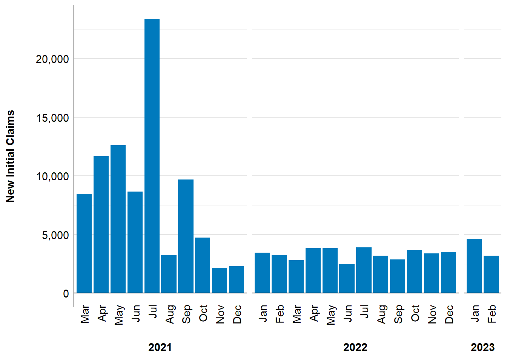
ggsave("Figure 7 Claims Trend.png",
height=3.5, width = 8, units = "in")
claims.education %>%
ggplot(aes(x = `claims`, y = reorder(`Educational Attainment`, claims),
label = comma(`claims`, accuracy = 1)))+
geom_col(fill = "#005A8D", width=0.75) +
scale_x_continuous(labels=comma_format(accuracy=1), breaks=scales::pretty_breaks(n = 6))+
theme_minimal() +
labs(x=NULL,y=NULL)+
theme(legend.position="bottom", legend.title=element_blank(),
axis.text.x = element_text(size=10, color="black"),
axis.text.y = element_text(size=10, color="black", margin=margin(r= -5)),
legend.text = element_text(size=10, color="black", face="bold"),
panel.grid = element_blank(),
panel.grid.major.x = element_line(color = "grey90"),
panel.grid.minor.x = element_line(color = "grey95")) +
guides(labels=guide_legend(reverse=T)) +
guides(fill = guide_legend(reverse = T)) +
geom_vline(aes(xintercept = 0), lwd = 1 )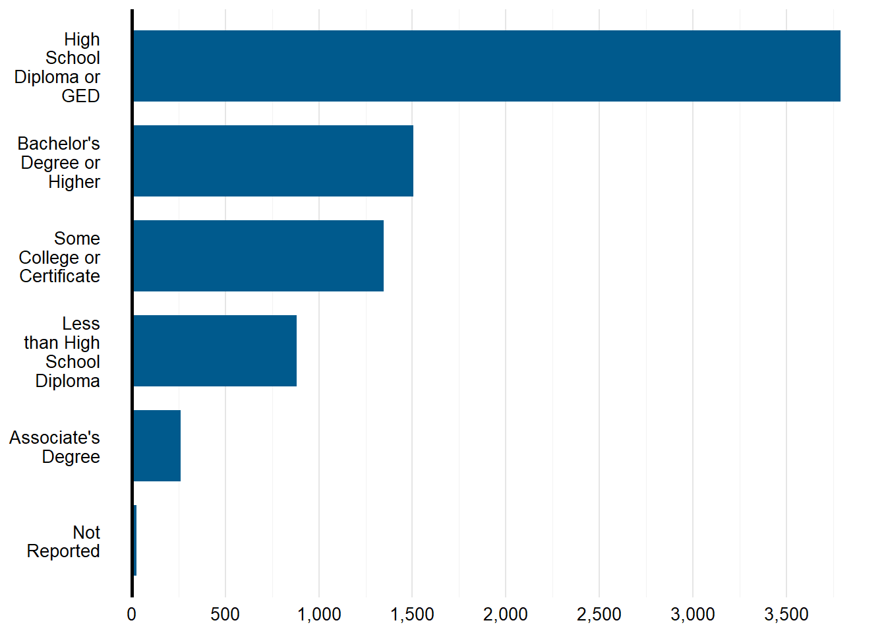
ggsave("Figure 6 UC Education.png",
height=5, width = 4.8, units = "in")
claims.counts <- claims.trend %>%
ungroup() %>%
slice_max(order_by = period, n = 3) %>%
summarize(total = sum(claims))
rm(claims.education, claims.trend, education, uc.claims)
#### Getting 3 Digit QCEW Data and Making Tables ####
naics.codes <- read_csv("A:\\LMI Reporting\\Quarterly LMI Report\\Data and Charts\\ggplot Inputs\\NAICScodes.csv")
QCEW3digit <- blsQCEW('Area', year = 2022, quarter = 2, area='42101') %>%
subset(agglvl_code == 75 & own_code == 5 & disclosure_code != "N" & oty_disclosure_code != "N") %>%
rename(Year = year,
Employment = month3_emplvl,
LQ = lq_month3_emplvl,
Annual.Est.Change = oty_qtrly_estabs_chg,
Annual.Emp.Pct.Change = oty_month3_emplvl_pct_chg,
Annual.Emp.Change = oty_month3_emplvl_chg) %>%
mutate(Aggregation = "Three-Digit") %>%
left_join(naics.codes, by = c("industry_code" = "code"))
#Top Employment Growth Table
QCEW3digit %>%
slice_max(Annual.Emp.Change, n=10) %>%
filter(Annual.Emp.Change > 0) %>%
dplyr::select(industry_code, title, Annual.Est.Change, Annual.Emp.Change, Annual.Emp.Pct.Change) %>%
mutate(Annual.Emp.Change = paste0("+", prettyNum(Annual.Emp.Change,big.mark=","))) %>%
mutate(Annual.Emp.Pct.Change = percent(Annual.Emp.Pct.Change/100,accuracy = .1, big.mark = ",")) %>%
rename("Industry Title" = title,
"Establishment Change" = Annual.Est.Change,
"Employment Change" = Annual.Emp.Change,
"NAICS" = industry_code,
"Employment Percent Change" = Annual.Emp.Pct.Change) %>%
gt() %>%
cols_align(align = "center", columns = c(NAICS,`Employment Change`,`Employment Percent Change`, `Establishment Change`)) %>%
tab_style(
style = list(cell_fill(color = "#007abd"), cell_text(weight = "bold", color="white", font = "Arial")),
locations = cells_column_labels(columns = c(NAICS,`Industry Title`, `Employment Change`, `Employment Percent Change`, `Establishment Change`))) %>%
tab_style(
style=cell_text(font = "Arial"),
locations = cells_body(columns = c(NAICS,`Industry Title`, `Employment Change`, `Employment Percent Change`, `Establishment Change`))) %>%
tab_options(
column_labels.padding = 10,
table.width = 1000
) %>%
cols_width(c(`Industry Title`) ~ px(450)) %>%
gtsave("Appendix Table 3 Top Employment Growth.png", expand = 10, vwidth =1100)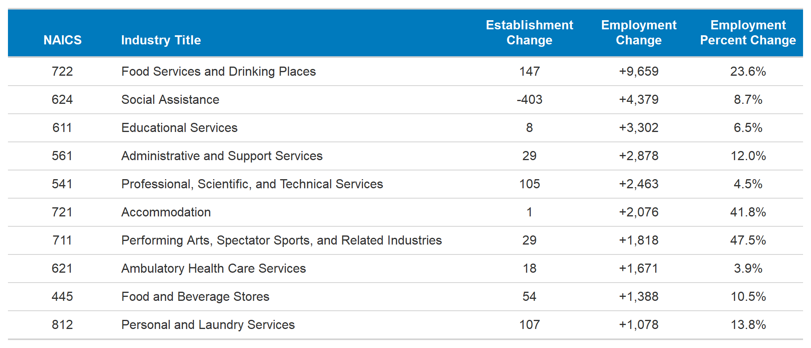
## Top Employment Decline Table
QCEW3digit %>%
slice_min(Annual.Emp.Change, n=10) %>%
filter(Annual.Emp.Change < 0) %>%
dplyr::select(industry_code, title, Annual.Est.Change, Annual.Emp.Change, Annual.Emp.Pct.Change) %>%
mutate(Annual.Emp.Change = prettyNum(Annual.Emp.Change,big.mark=",")) %>%
mutate(Annual.Emp.Pct.Change = percent(Annual.Emp.Pct.Change/100,accuracy = .1, big.mark = ",")) %>%
rename("Industry Title" = title,
"Establishment Change" = Annual.Est.Change,
"Employment Change" = Annual.Emp.Change,
"NAICS" = industry_code,
"Employment Percent Change" = Annual.Emp.Pct.Change) %>%
gt() %>%
cols_align(align = "center", columns = c(NAICS,`Employment Change`,`Employment Percent Change`, `Establishment Change`)) %>%
tab_style(
style = list(cell_fill(color = "#007abd"), cell_text(weight = "bold", color="white", font = "Arial")),
locations = cells_column_labels(columns = c(NAICS,`Industry Title`, `Employment Change`, `Employment Percent Change`, `Establishment Change`))) %>%
tab_style(
style=cell_text(font = "Arial"),
locations = cells_body(columns = c(NAICS,`Industry Title`, `Employment Change`, `Employment Percent Change`, `Establishment Change`))) %>%
tab_options(
column_labels.padding = 10,
table.width = 1000
) %>%
cols_width(c(`Industry Title`) ~ px(450)) %>%
gtsave("Appendix Table 4 Top Employment Decline.png", expand = 10, vwidth =1100)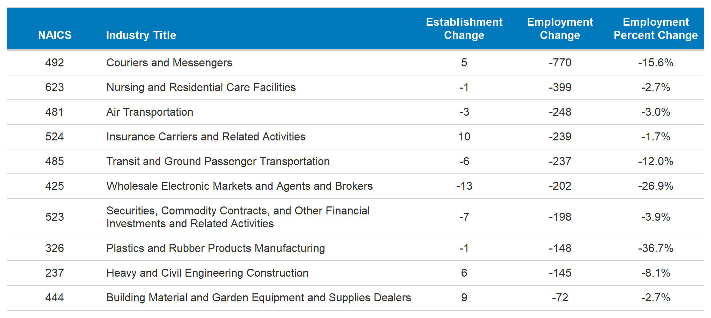
## Largest Industries
QCEW3digit %>%
mutate(Employment = round(Employment, -2),
Annual.Emp.Change = round(Annual.Emp.Change,-1)) %>%
slice_max(Employment, n=15) %>%
dplyr::select(industry_code,title, Employment, qtrly_estabs, LQ) %>%
mutate(qtrly_estabs = prettyNum(qtrly_estabs, big.mark = ",")) %>%
rename("Industry Title" = title,
"Establishments" = qtrly_estabs,
"Total Employment" = Employment,
"Location Quotient" = LQ,
"NAICS" = industry_code) %>%
gt() %>%
fmt_number(columns = c(`Total Employment`), decimals = 0) %>%
cols_align(align = "center", columns = c(NAICS, `Total Employment`, `Location Quotient`, `Establishments`)) %>%
tab_style(
style = list(
cell_fill(color = "#007abd"),
cell_text(weight = "bold", color="white", font = "Arial")
),
locations = cells_column_labels(columns = c(NAICS,`Industry Title`, `Total Employment`, `Location Quotient`, `Establishments`))
) %>%
tab_style(
style=cell_text(font = "Arial"),
locations = cells_body(columns = c(NAICS,`Industry Title`, `Total Employment`, `Location Quotient`, `Establishments`))) %>%
cols_width(c(`Industry Title`) ~ px(450)) %>%
tab_options(
column_labels.padding = 10,
table.width = 1100
) %>%
gtsave("Appendix Table 1 Largest Industries.png", expand = 10, vwidth=1200)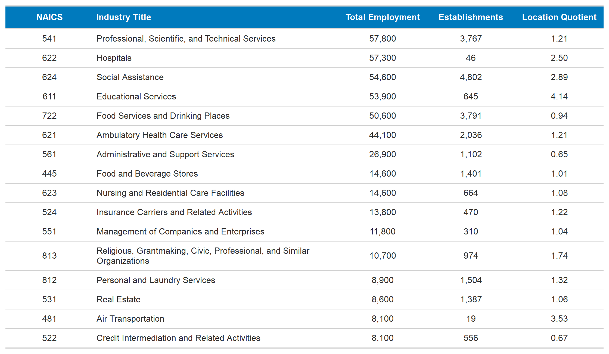
## Top Specialized Industries
QCEW3digit %>%
mutate(Employment = round(Employment, -2),
Annual.Emp.Change = round(Annual.Emp.Change,-1)) %>%
slice_max(LQ, n=10) %>%
dplyr::select(industry_code,title, Employment, qtrly_estabs, LQ) %>%
mutate(qtrly_estabs = prettyNum(qtrly_estabs, big.mark = ",")) %>%
rename("Industry Title" = title,
"Establishments" = qtrly_estabs,
"Total Employment" = Employment,
"Location Quotient" = LQ,
"NAICS" = industry_code) %>%
gt() %>%
fmt_number(columns = c(`Total Employment`), decimals = 0) %>%
cols_align(align = "center", columns = c(NAICS, `Total Employment`, `Location Quotient`, `Establishments`)) %>%
tab_style(
style = list(
cell_fill(color = "#007abd"),
cell_text(weight = "bold", color="white", font = "Arial")
),
locations = cells_column_labels(columns = c(NAICS,`Industry Title`, `Total Employment`, `Location Quotient`, `Establishments`))
) %>%
tab_style(
style=cell_text(font = "Arial"),
locations = cells_body(columns = c(NAICS,`Industry Title`, `Total Employment`, `Location Quotient`, `Establishments`))) %>%
cols_width(c(`Industry Title`) ~ px(450)) %>%
tab_options(
column_labels.padding = 10,
table.width = 1100
) %>%
gtsave("Appendix Table 2 Specialized Industries.png", expand = 10, vwidth=1200)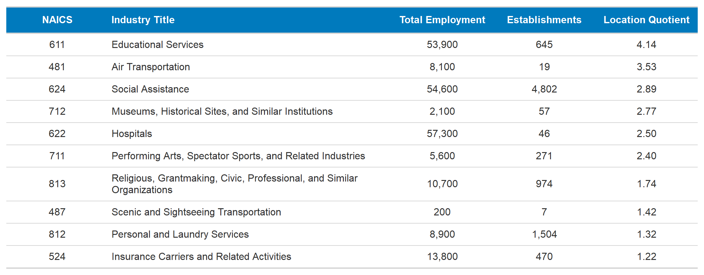
#Removing Unnecessary Data
rm(naics.codes, onet, QCEW.Previous, QCEW3digit, quarter.current, quarter.previous, year.current, year.previous)
#### END ####Including Plots
You can also embed plots, for example:

Note that the echo = FALSE parameter was added to the code chunk to prevent printing of the R code that generated the plot.